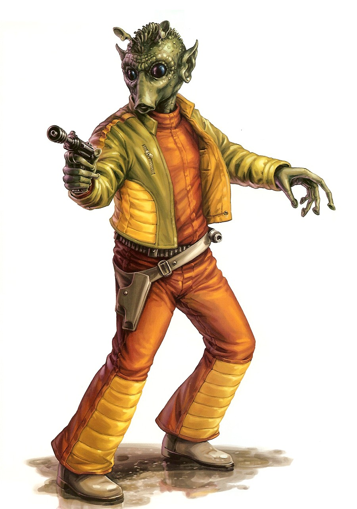

Rodian
Special Abilities: Rodians begin the game with one rank in Survival. They still may not train Survival above rank 2 during character creation. Rodians start with one rank in the Expert Tracker talent.
Rodians are born to hunt, coming from a hostile world that breeds killer instincts. For those with a price on their heads, a glimpse of a tapered green snout or an unmistakably putrid odor means a Rodian bounty hunter is on their tail.
Rodians evolved from climbing lizards and retain some of their ancestor's characteristics, particularly the large eyes and climbing suction cups on their fingers and toes. Nowadays, these physical features cannot hold an adult Rodian of 1.6 meters to a rock or tree for very long, but they have saved many Rodians from falls that would kill most other species.
The history of Rodia is a history of violence. Long ago, the tropical world teemed with vicious predators, necessitating that the Rodians' defenseless ancestors either adapt or die. Adapt they did, hiding in the boughs of trees or climbing high into mountain caves, where they fashioned tools and formulated plans to hunt down the predators. Their skills in the hunt grew quickly, and soon became the central focus of their society.
Rodians became so proficient at hunting that they gradually forced most of Rodia's other predators into extinction. With nothing much left to hunt, they turned on each other. Gladiatorial hunts between champions morphed into skirmishes and eventually tribal wars.
Rodia was almost blockaded when first discovered by Old Republic scouts due to the warlike Rodian culture. However, Rodian leadership was able to suppress their culture's violent tendencies long enough to make contact with the rest of the galaxy. Now. millennia later, Rodian culture has moved beyond the worst of its violent impulses; although, hunting is still a venerated tradition.
The world of Rodia in the Mid Rim is the Rodians' planet of origin. It merges urban and industrial development with tracts of untouched rainforest, providing brave Rodian youths with environments in which to test their hunting skills.
Because of the structure of their mouths, Rodians have a difficult time speaking Basic and some choose not to even try, relying exclusively on their native tongue, Rodese.
The cultural heritage of "the hunt" draws Rodians into bounty hunting or employment as gunmen. Rodians often take challenges too big for them, dreaming of the prizes they will receive on Rodia for nabbing the catch
A few centuries before the Republic scouts landed on Rodia, Rodians had nearly hunted themselves to extinction. In an effort to save his people. Grand Protector Harido Kavila wrote the first Rodian play, claiming he was inspired by the gods. The play was a simple, violent, and bloody dramatic re-enactment of a Rodian hunt. Nevertheless, this drama so amused the Rodians that it channeled their focus from killing each other into performing legendary hunts of the past. Gradually, other writers began to tackle more than the spectacle of violence. They examined the cores of their characters, the fears and longings of a hunter along with his melancholies and passions. Rodian drama dealt with these themes in such a visceral and emotional way that soon after Rodians entered the galactic community, their native drama took theaters by storm.